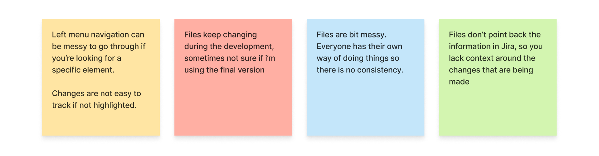
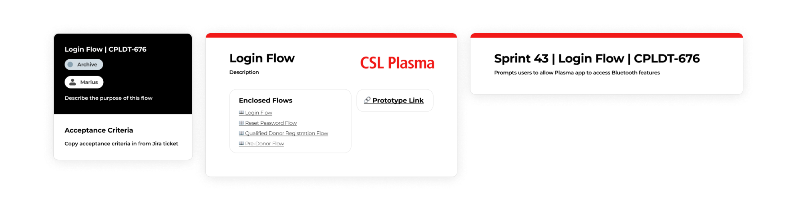

My work at CSL primarily focused around the Plasma Donor Experiences, a series of digital products aimed at streamlining and improving the donation experience. I've done my best to summarize my work from this internship, but please reach out if you'd like to learn more!
Internship
Designing to improve the donor experience for a global plasma collection network.
Skills
UX/UI Design
UX Research
Agile Methodologies
Design Thinking
Time
June 2023 - August 2023
August 2023 - Ongoing (Contract)
Tools
Figma
FigJam
Microsoft Office
Jira

CSL Behring is a biopharmaceutical company that develops and delivers innovative therapies for people living with conditions in the immunology, hematology, cardiovascular and metabolic, respiratory, and transplant therapeutic areas. It also manages CSL Plasma, one of the world's largest plasma collection networks.
Overview
Quick Nav
1. Donor App Design
Designing and documenting CSL's Plasma Donor App
2. Usability Testing
Creating generative activities to support CSL's first in-house usability testing
3. Re-Designing for Collaboration
Analyzing and improving the design team's collaborative workflow
Donor App Design
Auditing and designing user journeys for the CSL Plasma Apps in accordance to business goals and in response to real services offered at donation centers.
CSL Plasma's Donor Experiences were designed and developed by external vendors, leading to a lot of missed opportunities and room for improvement. As a part of bi-weekly sprints, I was responsible for identifying areas to redesign, with a priority in improving information architecture, logic of flows, and general look and feel of the app without straying far from the existing app design.
Throughout my internship, I redesigned around 10 critical flows that were misaligned with both user and business goals, setting the groundwork for future app updates.
Usability Testing
Creating materials for and participating in CSL's first in-house usability testing trials.
A business goal for CSL's user testing trials was to gauge the mental models and understanding of different in-center processes of users who are unfamiliar with donating at CSL Plasma. I created a generative activity to capture participant understanding of several key donation procedures having completed usability testing steps.
These testing trials are still underway, but this activity has allowed our dry-run participants to show their understanding clearly while also not bogging them down with too much unnecessary information.
Re-Designing for Collaboration
Having transitioned recently to an in-house design team, CSL Plasma's design operations were impeded by disorganization and having to collaborate with a multidisciplinary SCRUM team.
Through a series of workshops and interviews, I lead an initiative to introduce an organization structure to CSL Plasma's design files that balances the needs of different types of stakeholders, as well as opening the ability to scale up in the future. This effort has since been adopted by the team to great enthusiasm, having aligned the workflows of different contributors in an elegant and non-intrusive way.
The workshop I lead at the onset of this project revealed a lot of the pain points in the team's current workflow:
The core of the re-organization effort lies in the introduction of grouping and labeling components used to indicate key information that assists team members in their respective workflows. Upkeep is simple on the designer's end, and results in much less time spent cross-communicating on issues long since resolved.
